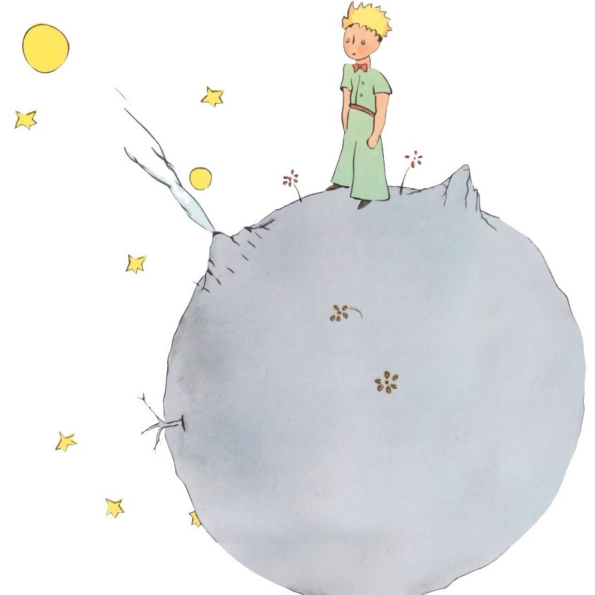

#伽x幼卡
#私设多到cry系列
#玩梗产物
#对就是个段子
#假装自己好好写东西
你眼看着地平线一点一点地吞吃着那个像番茄煎蛋一般的夕阳。末了，它还不忘用云擦去嘴角的番茄酱。
身边的小朋友一个一个地跟着家长离开，你目送着他们脚下拉长的影子渐渐和黑暗融为一体。
“那我们走了啊，明天见！”宅家的五个小家伙刚刚被接走，为首的和自己颜色很搭的男孩回头和自己挥手告别。
自己也挤出个微笑来跟他挥手。
很快，煎蛋被吃得一干二净。
你犹豫再三，还是跑到了电话亭。电话亭的设计极不贴心，你踮起脚尖，拼了命地向上伸长胳膊，才将将能用指尖戳到第二排的数字。你嘟囔了一句，然后用力地蹦哒起来，才拍到了第一排的数字“1”。
电话里传来的忙音终于被他的声音代替，在小朋友面前绷了半天的笑脸终于在一瞬间崩溃，声音里不自觉地带上了浓重的鼻音：
“别的小朋友都回家了，”你猛地吸了下鼻子，“你什么时候来接我……”
电话那头的男人声音里满是愧疚，他的安慰中带着手足无措：“我错了，我很快就到，Arcas再等我下好吗，抱歉抱歉，过会儿请你吃冰淇淋。再等我下，我很快就到了。”
“那你快点。”你知道无理取闹没有任何意义，而且你一直是以一个乐观而坚强的孩子自居，对Kalo哭闹这种事是无论如何也做不出来的。
夜色更厚重了些，你蜷缩在幼儿园滑梯旁边，期冀地望着地平线的位置，很快，那条线也被深蓝色模糊成一片。
终于，他醒目的蓝发出现在你的眼底，他一路狂奔而来，你从没见过他跑得那么快——哪怕是他工作的时候。
你也飞奔而去，直接把自己扔到了他的怀里。
“我们回家。”他一把接住了你，把你扛在肩头，你解开他系在脑后的发辫，让天蓝色的发如流水般流淌而下。你把脸埋进他的发，鼻腔里充斥着熟悉的洗发水的味道。
“恩。”你抬起头，露出牙齿。
“那还吃冰淇淋吗？”
“吃！Kalo不许耍赖！”
“好，那现在去。”
——END——
孤独这两个字拆开来看，有孩童，有瓜果，有走兽，有飞虫，足以撑起一个盛夏傍晚的巷口，人情味十足。稚儿擎瓜柳棚下，细犬逐蝶窄巷中。人间繁华多笑语，惟我空余两鬓风。孩童走兽飞虫自然热闹，可那都和你无关，这就叫孤独。
“你们很美，但你们是空虚的。”小王子仍然在对她们说，“没有人能为你 们去死。当然罗，我的那朵玫瑰花，一个普通的过路人以为她和你们一样。可是， 她单独一朵就比你们全体更重要，因为她是我浇灌的。因为她是我放在花罩中的。 因为她是我用屏风保护起来的。因为她身上的毛虫（除了留下两三只为了变蝴蝶 而外）是我除灭的。因为我倾听过她的怨艾和自诩，甚至有时我聆听着她的沉默。 因为她是我的玫瑰。”———小王子
"真心喜欢过的人没法做朋友，哪怕再多看几眼，都还是想拥有。我从未放弃过爱你，只是从浓烈变得悄无声息。"
我仰望天空。能看到一丝一毫的爱心么?不，看不到。只有太平洋上空悠然飘来浮去、无所事事的夏日云朵。云朵永远沉默无语。它们什么都不对我说。或许我不该仰望天空，应当将视线投去我的内部。我试着看向自己的内部，就如同窥视深深的井底。那里可以看到爱心么?不，看不到。看到的只有我的性格。我那个人的、顽固的、缺乏协调性的，每每任性妄为又常常怀疑自己的，哪怕遇到了痛苦也想在其中发现可笑之处的性格。我拎着它，就像拎着一个古旧的旅行包，踱过了漫长的历程。我并不是因为喜欢才拎着它。与内容相比，它显得太沉重，外观也不起眼，还到处绽开了线。我只是没有别的东西可拎，无奈才拎着它徘徊彷徨的。然而，我心中却对它怀有某种依依不舍的情感。 ———村上春树, 当我谈跑步时，我谈些什么
少年听雨歌楼上，红烛昏罗帐。 壮年听雨客舟中，江阔云低，断雁叫西风。 而今听雨僧庐下，鬓已星星也。悲欢离合总无情，一任阶前点滴到天明。 ———蒋捷《虞美人》